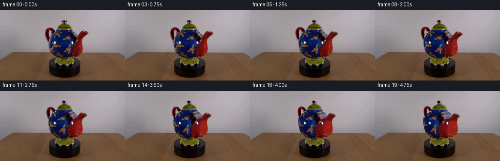
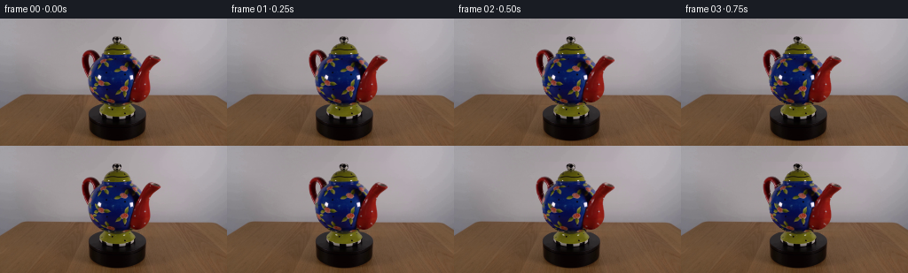
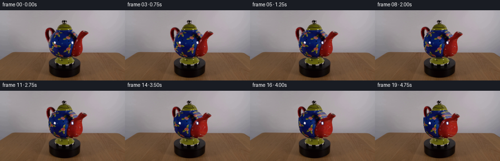
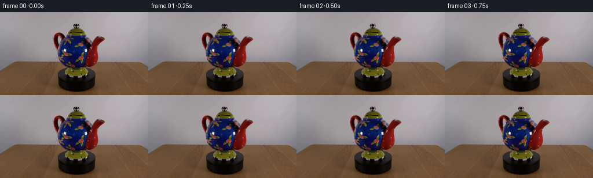
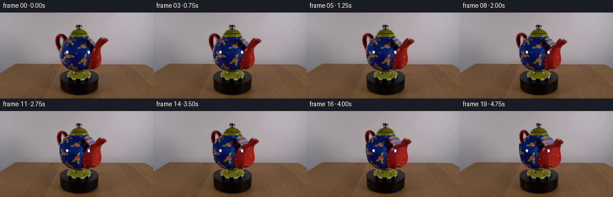

CODING AGENTS AS PIXEL WORLD MODELS
traex/GPT-6.1-Sol · 0176
点击播放 · 原生 RGB 像素
逐轮保存的候选
回放视频、检查图与代码变化。
每份候选均可单独播放。实际图片检查记录在下方工具轨迹中。
候选 01播放与检查图
点击播放 · 原生 RGB 像素


展开代码变化
--- 上一保存版本
+++ 本次保存版本
@@ -0,0 +1,194 @@
+from pathlib import Path
+import numpy as np
+from PIL import Image
+from scipy import ndimage
+import cv2
+from artifact_io import save
+
+ROOT=Path(__file__).resolve().parent
+H,W=144,256
+IMAGE=np.asarray(Image.open(ROOT/'first_frame.png').convert('RGB'),dtype=np.float32)
+YY,XX=np.mgrid[:H,:W].astype(np.float32)
+
+# Camera and silhouettes recovered numerically from the supplied photograph.
+rows=np.array([
+[40,114,149],[41,114,150],[42,113,150],[43,111,152],[44,110,153],
+[45,108,154],[46,106,155],[47,105,156],[48,104,158],[49,103,159],
+[50,102,160],[51,101,161],[52,101,162],[53,100,163],[54,100,165],
+[55,99,166],[56,99,167],[57,99,168],[58,99,169],[59,99,169],
+[60,99,169],[61,99,169],[62,99,169],[63,99,169],[64,99,169],
+[65,99,169],[66,99,169],[67,99,169],[68,99,169],[69,99,170],
+[70,99,170],[71,99,170],[72,99,170],[73,100,170],[74,100,170],
+[75,100,171],[76,100,171],[77,101,171],[78,101,171],[79,101,171],
+[80,101,171],[81,102,170],[82,102,170],[83,103,169],[84,103,169],
+[85,104,169],[86,105,168],[87,106,167],[88,107,167],[89,108,166],
+[90,109,165],[91,110,164],[92,111,163],[93,113,161],[94,114,159],
+[95,116,157],[96,118,154],[97,124,146]],dtype=np.float32)
+
+def remap(a,x,y):
+ return cv2.remap(a,x.astype(np.float32),y.astype(np.float32),cv2.INTER_CUBIC,borderMode=cv2.BORDER_REPLICATE)
+
+def polygon(points):
+ mask=np.zeros((H,W),np.uint8)
+ cv2.fillPoly(mask,[np.array(points,dtype=np.int32)],1)
+ return mask.astype(bool)
+
+# Reconstruct only the wall concealed by the rotating silhouette. The wooden
+# surface, shadows and turntable remain exactly as photographed.
+BG=IMAGE.copy()
+for y in range(18,98):
+ xs=np.r_[np.arange(75,91),np.arange(184,204)]
+ basis=np.stack([np.ones(len(xs)),(xs-134)/55,((xs-134)/55)**2],axis=1)
+ coeff=np.linalg.lstsq(basis,IMAGE[y,xs],rcond=None)[0]
+ x=np.arange(91,184)
+ pred=np.stack([np.ones(len(x)),(x-134)/55,((x-134)/55)**2],axis=1)@coeff
+ # Use neighboring photographic noise, rather than a perfectly flat fill.
+ residual=IMAGE[y,75:91]-basis[:16]@coeff
+ BG[y,91:184]=pred+residual[np.arange(len(x))%16]*.5
+
+D=np.linalg.norm(IMAGE-BG,axis=2)
+region=(XX>=91)&(XX<=183)&(YY>=19)&(YY<=97)
+mask=(D>24)®ion
+# Fill the highlights on the ceramic, not the actual open handle and knob.
+filled=ndimage.binary_fill_holes(mask)
+holes=filled & ~mask
+mask |= holes & (YY>=39)&(XX>=106)&(XX<=159)
+# A small exact silhouette matte: diffuse edge coverage is estimated from the
+# local difference against the stationary wall.
+eroded=ndimage.binary_erosion(mask,iterations=1)
+_,idx=ndimage.distance_transform_edt(~eroded,return_indices=True)
+nearD=D[tuple(idx)]
+A=np.clip(D/np.maximum(nearD,40),0,1)*mask
+A[eroded]=1
+A=np.maximum(A,holes.astype(np.float32)*((YY>=39)&(XX>=106)&(XX<=159)))
+A=np.clip(A,0,1).astype(np.float32)
+
+# Partition the image into the body of revolution and two coplanar appendages.
+left=np.interp(YY[:,0],rows[:,0],rows[:,1])[:,None]
+right=np.interp(YY[:,0],rows[:,0],rows[:,2])[:,None]
+body_region=(YY>=40)&(YY<=97)&(XX>=left)&(XX<=right)
+lid_region=(YY<40)&(XX>=114)&(XX<=152)
+handle_region=(YY>=34)&(YY<=70)&(XX<118)&~body_region
+spout_region=(YY>=40)&(YY<=66)&(XX>154)&~body_region
+bodyA=A*body_region
+lidA=A*lid_region
+handleA=A*handle_region
+spoutA=A*spout_region
+# Unmixed source colors allow subpixel movement without transporting gray halos.
+F=(IMAGE-BG*(1-A[:,:,None]))/np.maximum(A[:,:,None],.07)
+F=np.clip(F,0,255)
+
+def extended_texture(alpha):
+ valid=(alpha>.85)
+ # Sampling the interior avoids a gray line at newly revealed grazing angles.
+ interior=ndimage.binary_erosion(valid,iterations=1)
+ if interior.sum()<8: interior=valid
+ _, ix=ndimage.distance_transform_edt(~interior,return_indices=True)
+ out=F[tuple(ix)].copy()
+ out[interior]=F[interior]
+ return out.astype(np.float32)
+
+bodyT=extended_texture(bodyA)
+lidT=extended_texture(lidA)
+
+# The bright white patches are reflections of the room lights, and consequently
+# stay at the same normals of the glazed, rotationally symmetric body.
+high=(np.min(IMAGE,axis=2)>159)&(YY>=60)&(YY<=70)&(bodyA>.9)
+high=ndimage.binary_dilation(high,iterations=1)&(YY>=60)&(YY<=71)&(bodyA>.9)
+reflection_alpha=cv2.GaussianBlur(high.astype(np.float32),(3,3),.48)
+reflection_alpha=np.clip(reflection_alpha,0,1)
+# Remove the fixed highlights from the texture before the material is rotated.
+bodyT=cv2.inpaint(np.uint8(np.clip(bodyT,0,255)),high.astype(np.uint8)*255,3,cv2.INPAINT_TELEA).astype(np.float32)
+reflection=IMAGE.copy()
+
+CX=134.0
+ELEV=.235
+
+def blend(dst,tex,alpha):
+ return dst*(1-alpha[:,:,None])+tex*alpha[:,:,None]
+
+def appendage(dst,alpha,theta,kind):
+ c,s=np.cos(theta),np.sin(theta)
+ # Thin curved handles and nozzles have the same azimuthal rotation as the pot.
+ # The handle sits behind the body as it moves around the far side.
+ z=-1.5 if kind=='handle' else 1.0
+ mat=np.array([[c,0,CX*(1-c)-s*z],
+ [ELEV*s,1,-ELEV*s*CX+ELEV*(c-1)*z]],np.float32)
+ a=cv2.warpAffine(alpha,mat,(W,H),flags=cv2.INTER_CUBIC)
+ premul=cv2.warpAffine(F*alpha[:,:,None],mat,(W,H),flags=cv2.INTER_CUBIC)
+ a=np.clip(a,0,1)
+ color=premul/np.maximum(a[:,:,None],.005)
+ return blend(dst,np.clip(color,0,255),a)
+
+centers=((rows[:,1]+rows[:,2])/2)
+radii=((rows[:,2]-rows[:,1])/2)
+C=np.interp(YY,rows[:,0],centers)
+R=np.interp(YY,rows[:,0],radii)
+U=np.clip((XX-C)/np.maximum(R,1),-1,1)
+PHI=np.arcsin(U)
+
+# Shape remains axisymmetric while decoration traverses curved longitude lines.
+def body(dst,theta):
+ phi=PHI+theta
+ srcu=np.sin(phi)
+ z0=R*np.cos(phi)
+ z1=R*np.sqrt(np.maximum(0,1-U*U))
+ taper=np.clip((YY-40)/9,0,1)*np.clip((97-YY)/10,0,1)
+ sy=YY+ELEV*(z0-z1)*taper
+ sc=np.interp(sy,rows[:,0],centers)
+ sr=np.interp(sy,rows[:,0],radii)
+ sx=sc+sr*srcu
+ tex=remap(bodyT,sx,sy)
+ # Preserve the stable broad illumination of the original glaze. Adjustment
+ # is deliberately modest; most of the photograph is material color.
+ light0=.84+.16*np.sqrt(np.maximum(0,1-srcu*srcu))
+ light1=.84+.16*np.sqrt(np.maximum(0,1-U*U))
+ tex*=np.clip(light1/np.maximum(light0,.5),.85,1.16)[:,:,None]
+ dst=blend(dst,np.clip(tex,0,255),bodyA)
+ dst=blend(dst,reflection,reflection_alpha*bodyA)
+ return dst
+
+# Rotationally symmetric domed lid; its silhouette and specular glints are stable.
+def lid(dst,theta):
+ lc=132.0
+ # Lower dome spreads to the blue lip; the loop at its crown remains open.
+ rr=np.interp(YY,[19,21,24,27,28,30,34,38,40],[2,5,5,4,6,10,14,16,18])
+ u=np.clip((XX-lc)/np.maximum(rr,1),-1,1)
+ p=np.arcsin(u)
+ sx=lc+rr*np.sin(p+theta*.65)
+ sy=YY+ELEV*rr*(np.cos(p+theta*.65)-np.cos(p))*.3
+ tex=remap(lidT,sx,sy)
+ # Lower dome is uniform gold, so room reflections should not turn with it.
+ glint=(np.min(IMAGE,axis=2)>155)&(lidA>.8)
+ tex=np.where(glint[:,:,None],IMAGE,tex)
+ return blend(dst,tex,lidA)
+
+def render(theta):
+ dst=BG.copy()
+ dst=appendage(dst,handleA,theta,'handle')
+ dst=body(dst,theta)
+ dst=lid(dst,theta)
+ dst=appendage(dst,spoutA,theta,'spout')
+ return dst
+
+# Any subpixel edge residue from the numerical decomposition is carried through
+# at the appropriate boundary, with a smooth fade as the surface turns away.
+zero=render(0)
+residual=IMAGE-zero
+
+def main():
+ frames=[]
+ for i in range(20):
+ theta=np.deg2rad(32.0)*i/19
+ frame=render(theta)
+ # Keep the original stationary platform (including its reflected glow)
+ # and remove numerical wall interpolation outside the initial/new object.
+ frame += residual*np.exp(-i/2.0)
+ frame[YY>=98]=IMAGE[YY>=98]
+ if i==0: frame=IMAGE.copy()
+ frames.append(np.uint8(np.clip(np.rint(frame),0,255)))
+ frames=np.stack(frames)
+ save(frames,ROOT)
+ np.save(ROOT/'.tmp/candidate.npy',frames)
+
+if __name__=='__main__':main()
候选 02播放与检查图
点击播放 · 原生 RGB 像素


展开代码变化
--- 上一保存版本
+++ 本次保存版本
@@ -62,6 +62,8 @@
A[eroded]=1
A=np.maximum(A,holes.astype(np.float32)*((YY>=39)&(XX>=106)&(XX<=159)))
A=np.clip(A,0,1).astype(np.float32)
+removal=ndimage.binary_dilation(mask,iterations=1)
+BG[~removal]=IMAGE[~removal]
# Partition the image into the body of revolution and two coplanar appendages.
left=np.interp(YY[:,0],rows[:,0],rows[:,1])[:,None]
@@ -85,7 +87,7 @@
if interior.sum()<8: interior=valid
_, ix=ndimage.distance_transform_edt(~interior,return_indices=True)
out=F[tuple(ix)].copy()
- out[interior]=F[interior]
+ out[valid]=F[valid]
return out.astype(np.float32)
bodyT=extended_texture(bodyA)
候选 03播放与检查图
点击播放 · 原生 RGB 像素

展开代码变化
--- 上一保存版本
+++ 本次保存版本
@@ -68,8 +68,8 @@
# Partition the image into the body of revolution and two coplanar appendages.
left=np.interp(YY[:,0],rows[:,0],rows[:,1])[:,None]
right=np.interp(YY[:,0],rows[:,0],rows[:,2])[:,None]
-body_region=(YY>=40)&(YY<=97)&(XX>=left)&(XX<=right)
-lid_region=(YY<40)&(XX>=114)&(XX<=152)
+body_region=(YY>=41)&(YY<=97)&(XX>=left)&(XX<=right)
+lid_region=(YY<=40)&(XX>=114)&(XX<=152)
handle_region=(YY>=34)&(YY<=70)&(XX<118)&~body_region
spout_region=(YY>=40)&(YY<=66)&(XX>154)&~body_region
bodyA=A*body_region
@@ -152,18 +152,19 @@
# Rotationally symmetric domed lid; its silhouette and specular glints are stable.
def lid(dst,theta):
+ # The unpatterned gold dome and its broad highlights remain fixed, while
+ # the small hollow lifting loop rotates rigidly with the handle plane.
+ dome=lidA*(YY>=28)
+ dst=blend(dst,F,dome)
+ alpha=lidA*(YY<28)
+ c,s=np.cos(theta),np.sin(theta)
lc=132.0
- # Lower dome spreads to the blue lip; the loop at its crown remains open.
- rr=np.interp(YY,[19,21,24,27,28,30,34,38,40],[2,5,5,4,6,10,14,16,18])
- u=np.clip((XX-lc)/np.maximum(rr,1),-1,1)
- p=np.arcsin(u)
- sx=lc+rr*np.sin(p+theta*.65)
- sy=YY+ELEV*rr*(np.cos(p+theta*.65)-np.cos(p))*.3
- tex=remap(lidT,sx,sy)
- # Lower dome is uniform gold, so room reflections should not turn with it.
- glint=(np.min(IMAGE,axis=2)>155)&(lidA>.8)
- tex=np.where(glint[:,:,None],IMAGE,tex)
- return blend(dst,tex,lidA)
+ mat=np.array([[c,0,lc*(1-c)],
+ [ELEV*s,1,-ELEV*s*lc]],np.float32)
+ a=np.clip(cv2.warpAffine(alpha,mat,(W,H),flags=cv2.INTER_CUBIC),0,1)
+ premul=cv2.warpAffine(F*alpha[:,:,None],mat,(W,H),flags=cv2.INTER_CUBIC)
+ color=premul/np.maximum(a[:,:,None],.005)
+ return blend(dst,np.clip(color,0,255),a)
def render(theta):
dst=BG.copy()
可观测工具轨迹
实际执行的命令与返回图片。
命令 1exit 0
/bin/bash -lc "ls -la && cat prompt.txt && printf '\\n---RULES---\\n' && cat GENERATION_RULES.md"
命令 2exit 0
/bin/bash -lc "cat artifact_io.py && python - <<'PY'
from PIL import Image
import numpy as np
im=np.array(Image.open('first_frame.png').convert('RGB'))
print('shape',im.shape)
print('sample:',im[::16,::16,:].tolist())
a=np.asarray(Image.fromarray(im).resize((96,54)).convert('L'))
c=' .:-=+*#%@'
for r in a:print(''.join(c[int(v)*len(c)//256] for v in r))
PY"命令 3exit 0
/bin/bash -lc "python - <<'PY'
import numpy as np
from PIL import Image
im=np.array(Image.open('first_frame.png'))
# categorize color for crop
for y in range(16,102,2):
row=''
for x in range(80,190):
r,g,b=map(int,im[y,x,:3]);mx=max(r,g,b);mn=min(r,g,b)
if mx-mn<25 and mx>105: c=' '
elif mx<30:c='K'
elif b>r*1.25 and b>g*1.12:c='B' if b>100 else 'b'
elif r>g*1.4 and r>b*1.3:c='R' if r>100 else 'r'
elif r>110 and g>90 and b<g*.65:c='Y'
elif r>150 and g>150 and b>140:c='W'
elif mx<70:c='k'
else:c='o'
row+=c
print(f'{y:3d} '+row)
# run contours by diff from estimated unoccluded background row
for y in range(16,101,2):
b=(im[y,80,:3].astype(float)+im[y,190,:3].astype(float))/2
a=im[y,:,:3].astype(float)
m=(np.linalg.norm(a-b,axis=1)>55)&(np.arange(256)>85)&(np.arange(256)<187)
runs=[];on=False
for x in range(85,188):
if m[x] and not on:s=x;on=True
elif not m[x] and on:runs.append((s,x-1));on=False
if on:runs.append((s,187))
print(y,runs)
PY"命令 4exit 0
/bin/bash -lc "python - <<'PY'
from PIL import Image
import numpy as np
im=np.array(Image.open('first_frame.png'))[:,:,:3]
print('Detailed luminance body:')
g=Image.fromarray(im[18:98,90:184]).convert('L');a=np.array(g);c=' .:-=+*#%@'
for y,r in enumerate(a):print(f'{18+y:2d} '+''.join(c[int(v)*10//256] for v in r))
print('platform luminance')
g=np.array(Image.fromarray(im[95:143,88:177]).convert('L'))
for y,r in enumerate(g):print(f'{95+y:3d} '+''.join(c[int(v)*10//256] for v in r))
PY"命令 5exit 0
/bin/bash -lc "python - <<'PY'
import importlib.util
for s in ['numpy','scipy','cv2','PIL','numba']:print(s, bool(importlib.util.find_spec(s)))
from PIL import Image
import numpy as np
im=np.array(Image.open('first_frame.png'))[:,:,:3]
# print coarse RGB palette crop assignment nearest colors for shape/pattern
pal={'b':(16,25,77),'B':(27,44,110),'r':(75,7,9),'R':(132,16,15),'y':(88,78,22),'Y':(148,136,56),'w':(217,211,231),'_':(160,153,157),'k':(20,15,23),'o':(98,80,56)}
for y in range(18,100):
row=''
for x in range(90,183):
v=im[y,x].astype(float)
c=min(pal,key=lambda c: np.linalg.norm(v-pal[c]))
row+=c
print('%02d '%y+row)
PY"命令 6exit 0
/bin/bash -lc "python - <<'PY'
from PIL import Image
import numpy as np
im=np.array(Image.open('first_frame.png'))[:,:,:3]
for y in [20,30,36,42,50,60,70,80,85,86,87,90,95,98,100,105,110,112]:
print(y,[(x,im[y,x].tolist()) for x in [85,92,100,110,120,132,145,155,165,175,185,195]])
PY"命令 7exit 0
/bin/bash -lc "mkdir -p .tmp && cat > .tmp/analyze.py <<'PY'
import cv2
import numpy as np
from PIL import Image
im=np.array(Image.open('first_frame.png').convert('RGB'))
h,w=im.shape[:2]
# background linear smooth
bg=im.copy().astype(float)
for y in range(18,97):
l=im[y,83:89].mean(0);r=im[y,185:191].mean(0)
for x in range(89,185):bg[y,x]=l+(r-l)*(x-86)/102
D=np.linalg.norm(im.astype(float)-bg,axis=2)
# Display difference binary, with silhouette holes
for y in range(18,98):
print('%02d '%y+''.join('X' if D[y,x]>100 else 'x' if D[y,x]>50 else '+' if D[y,x]>20 else ' ' for x in range(90,184)))
PY
python .tmp/analyze.py"命令 8exit 0
/bin/bash -lc "cat > generate.py <<'PY'
from pathlib import Path
import numpy as np
from PIL import Image
from scipy import ndimage
import cv2
from artifact_io import save
ROOT=Path(__file__).resolve().parent
H,W=144,256
IMAGE=np.asarray(Image.open(ROOT/'first_frame.png').convert('RGB'),dtype=np.float32)
YY,XX=np.mgrid[:H,:W].astype(np.float32)
# Camera and silhouettes recovered numerically from the supplied photograph.
rows=np.array([
[40,114,149],[41,114,150],[42,113,150],[43,111,152],[44,110,153],
[45,108,154],[46,106,155],[47,105,156],[48,104,158],[49,103,159],
[50,102,160],[51,101,161],[52,101,162],[53,100,163],[54,100,165],
[55,99,166],[56,99,167],[57,99,168],[58,99,169],[59,99,169],
[60,99,169],[61,99,169],[62,99,169],[63,99,169],[64,99,169],
[65,99,169],[66,99,169],[67,99,169],[68,99,169],[69,99,170],
[70,99,170],[71,99,170],[72,99,170],[73,100,170],[74,100,170],
[75,100,171],[76,100,171],[77,101,171],[78,101,171],[79,101,171],
[80,101,171],[81,102,170],[82,102,170],[83,103,169],[84,103,169],
[85,104,169],[86,105,168],[87,106,167],[88,107,167],[89,108,166],
[90,109,165],[91,110,164],[92,111,163],[93,113,161],[94,114,159],
[95,116,157],[96,118,154],[97,124,146]],dtype=np.float32)
def remap(a,x,y):
return cv2.remap(a,x.astype(np.float32),y.astype(np.float32),cv2.INTER_CUBIC,borderMode=cv2.BORDER_REPLICATE)
def polygon(points):
mask=np.zeros((H,W),np.uint8)
cv2.fillPoly(mask,[np.array(points,dtype=np.int32)],1)
return mask.astype(bool)
# Reconstruct only the wall concealed by the rotating silhouette. The wooden
# surface, shadows and turntable remain exactly as photographed.
BG=IMAGE.copy()
for y in range(18,98):
xs=np.r_[np.arange(75,91),np.arange(184,204)]
basis=np.stack([np.ones(len(xs)),(xs-134)/55,((xs-134)/55)**2],axis=1)
coeff=np.linalg.lstsq(basis,IMAGE[y,xs],rcond=None)[0]
x=np.arange(91,184)
pred=np.stack([np.ones(len(x)),(x-134)/55,((x-134)/55)**2],axis=1)@coeff
# Use neighboring photographic noise, rather than a perfectly flat fill.
residual=IMAGE[y,75:91]-basis[:16]@coeff
BG[y,91:184]=pred+residual[np.arange(len(x))%16]*.5
D=np.linalg.norm(IMAGE-BG,axis=2)
region=(XX>=91)&(XX<=183)&(YY>=19)&(YY<=97)
mask=(D>24)®ion
# Fill the highlights on the ceramic, not the actual open handle and knob.
filled=ndimage.binary_fill_holes(mask)
holes=filled & ~mask
mask |= holes & (YY>=39)&(XX>=106)&(XX<=159)
# A small exact silhouette matte: diffuse edge coverage is estimated from the
# local difference against the stationary wall.
eroded=ndimage.binary_erosion(mask,iterations=1)
_,idx=ndimage.distance_transform_edt(~eroded,return_indices=True)
nearD=D[tuple(idx)]
A=np.clip(D/np.maximum(nearD,40),0,1)*mask
A[eroded]=1
A=np.maximum(A,holes.astype(np.float32)*((YY>=39)&(XX>=106)&(XX<=159)))
A=np.clip(A,0,1).astype(np.float32)
# Partition the image into the body of revolution and two coplanar appendages.
left=np.interp(YY[:,0],rows[:,0],rows[:,1])[:,None]
right=np.interp(YY[:,0],rows[:,0],rows[:,2])[:,None]
body_region=(YY>=40)&(YY<=97)&(XX>=left)&(XX<=right)
lid_region=(YY<40)&(XX>=114)&(XX<=152)
handle_region=(YY>=34)&(YY<=70)&(XX<118)&~body_region
spout_region=(YY>=40)&(YY<=66)&(XX>154)&~body_region
bodyA=A*body_region
lidA=A*lid_region
handleA=A*handle_region
spoutA=A*spout_region
# Unmixed source colors allow subpixel movement without transporting gray halos.
F=(IMAGE-BG*(1-A[:,:,None]))/np.maximum(A[:,:,None],.07)
F=np.clip(F,0,255)
def extended_texture(alpha):
valid=(alpha>.85)
# Sampling the interior avoids a gray line at newly revealed grazing angles.
interior=ndimage.binary_erosion(valid,iterations=1)
if interior.sum()<8: interior=valid
_, ix=ndimage.distance_transform_edt(~interior,return_indices=True)
out=F[tuple(ix)].copy()
out[interior]=F[interior]
return out.astype(np.float32)
bodyT=extended_texture(bodyA)
lidT=extended_texture(lidA)
# The bright white patches are reflections of the room lights, and consequently
# stay at the same normals of the glazed, rotationally symmetric body.
high=(np.min(IMAGE,axis=2)>159)&(YY>=60)&(YY<=70)&(bodyA>.9)
high=ndimage.binary_dilation(high,iterations=1)&(YY>=60)&(YY<=71)&(bodyA>.9)
reflection_alpha=cv2.GaussianBlur(high.astype(np.float32),(3,3),.48)
reflection_alpha=np.clip(reflection_alpha,0,1)
# Remove the fixed highlights from the texture before the material is rotated.
bodyT=cv2.inpaint(np.uint8(np.clip(bodyT,0,255)),high.astype(np.uint8)*255,3,cv2.INPAINT_TELEA).astype(np.float32)
reflection=IMAGE.copy()
CX=134.0
ELEV=.235
def blend(dst,tex,alpha):
return dst*(1-alpha[:,:,None])+tex*alpha[:,:,None]
def appendage(dst,alpha,theta,kind):
c,s=np.cos(theta),np.sin(theta)
# Thin curved handles and nozzles have the same azimuthal rotation as the pot.
# The handle sits behind the body as it moves around the far side.
z=-1.5 if kind=='handle' else 1.0
mat=np.array([[c,0,CX*(1-c)-s*z],
[ELEV*s,1,-ELEV*s*CX+ELEV*(c-1)*z]],np.float32)
a=cv2.warpAffine(alpha,mat,(W,H),flags=cv2.INTER_CUBIC)
premul=cv2.warpAffine(F*alpha[:,:,None],mat,(W,H),flags=cv2.INTER_CUBIC)
a=np.clip(a,0,1)
color=premul/np.maximum(a[:,:,None],.005)
return blend(dst,np.clip(color,0,255),a)
centers=((rows[:,1]+rows[:,2])/2)
radii=((rows[:,2]-rows[:,1])/2)
C=np.interp(YY,rows[:,0],centers)
R=np.interp(YY,rows[:,0],radii)
U=np.clip((XX-C)/np.maximum(R,1),-1,1)
PHI=np.arcsin(U)
# Shape remains axisymmetric while decoration traverses curved longitude lines.
def body(dst,theta):
phi=PHI+theta
srcu=np.sin(phi)
z0=R*np.cos(phi)
z1=R*np.sqrt(np.maximum(0,1-U*U))
taper=np.clip((YY-40)/9,0,1)*np.clip((97-YY)/10,0,1)
sy=YY+ELEV*(z0-z1)*taper
sc=np.interp(sy,rows[:,0],centers)
sr=np.interp(sy,rows[:,0],radii)
sx=sc+sr*srcu
tex=remap(bodyT,sx,sy)
# Preserve the stable broad illumination of the original glaze. Adjustment
# is deliberately modest; most of the photograph is material color.
light0=.84+.16*np.sqrt(np.maximum(0,1-srcu*srcu))
light1=.84+.16*np.sqrt(np.maximum(0,1-U*U))
tex*=np.clip(light1/np.maximum(light0,.5),.85,1.16)[:,:,None]
dst=blend(dst,np.clip(tex,0,255),bodyA)
dst=blend(dst,reflection,reflection_alpha*bodyA)
return dst
# Rotationally symmetric domed lid; its silhouette and specular glints are stable.
def lid(dst,theta):
lc=132.0
# Lower dome spreads to the blue lip; the loop at its crown remains open.
rr=np.interp(YY,[19,21,24,27,28,30,34,38,40],[2,5,5,4,6,10,14,16,18])
u=np.clip((XX-lc)/np.maximum(rr,1),-1,1)
p=np.arcsin(u)
sx=lc+rr*np.sin(p+theta*.65)
sy=YY+ELEV*rr*(np.cos(p+theta*.65)-np.cos(p))*.3
tex=remap(lidT,sx,sy)
# Lower dome is uniform gold, so room reflections should not turn with it.
glint=(np.min(IMAGE,axis=2)>155)&(lidA>.8)
tex=np.where(glint[:,:,None],IMAGE,tex)
return blend(dst,tex,lidA)
def render(theta):
dst=BG.copy()
dst=appendage(dst,handleA,theta,'handle')
dst=body(dst,theta)
dst=lid(dst,theta)
dst=appendage(dst,spoutA,theta,'spout')
return dst
# Any subpixel edge residue from the numerical decomposition is carried through
# at the appropriate boundary, with a smooth fade as the surface turns away.
zero=render(0)
residual=IMAGE-zero
def main():
frames=[]
for i in range(20):
theta=np.deg2rad(32.0)*i/19
frame=render(theta)
# Keep the original stationary platform (including its reflected glow)
# and remove numerical wall interpolation outside the initial/new object.
frame += residual*np.exp(-i/2.0)
frame[YY>=98]=IMAGE[YY>=98]
if i==0: frame=IMAGE.copy()
frames.append(np.uint8(np.clip(np.rint(frame),0,255)))
frames=np.stack(frames)
save(frames,ROOT)
np.save(ROOT/'.tmp/candidate.npy',frames)
if __name__=='__main__':main()
PY
python generate.py"命令 9exit 0
/bin/bash -lc "python - <<'PY'
import numpy as np
from PIL import Image
im=np.load('.tmp/candidate.npy')
c=' .:-=+*#%@'
for k in [1,10,19]:
print('FRAME',k)
a=np.array(Image.fromarray(im[k,18:99,90:184]).convert('L'))
for y in range(0,81,2):print(f'{18+y:02d} '+''.join(c[int(v)*10//256] for v in a[y]))
print('diff per frame',[round(float(np.abs(a.astype(float)-b).mean()),3) for a,b in zip(im[1:],im[:-1])])
PY"命令 10exit 0
/bin/bash -lc "python - <<'PY'
import numpy as np
im=np.load('.tmp/candidate.npy')
pal={'b':(16,25,77),'B':(27,44,110),'r':(75,7,9),'R':(132,16,15),'y':(88,78,22),'Y':(148,136,56),'w':(217,211,231),'_':(160,153,157),'k':(20,15,23),'o':(98,80,56)}
for k in [0,19]:
print('FRAME',k)
for y in range(30,98,2):
row=''
for x in range(90,183):
v=im[k,y,x].astype(float);row+=min(pal,key=lambda c: np.linalg.norm(v-pal[c]))
print('%02d '%y+row)
PY"命令 11exit 0
/bin/bash -lc "python - <<'PY'
import generate as g
import numpy as np
for y in [40,42,44,48,50,52,60,70,80,90]:
print('y',y,'alpha',[(x,round(g.A[y,x],2)) for x in range(145,169)])
print('tex',[(x,g.bodyT[y,x].astype(int).tolist()) for x in range(145,171,2)])
print('high texture',(g.bodyT.max(axis=2)>220).sum())
PY"命令 12exit 0
/bin/bash -lc "python generate.py && python - <<'PY'
import generate as g
import numpy as np
th=np.deg2rad(32)
phi=g.PHI+th
srcu=np.sin(phi)
z0=g.R*np.cos(phi);z1=g.R*np.sqrt(np.maximum(0,1-g.U*g.U))
taper=np.clip((g.YY-40)/9,0,1)*np.clip((97-g.YY)/10,0,1)
sy=g.YY+g.ELEV*(z0-z1)*taper
sc=np.interp(sy,g.rows[:,0],(g.rows[:,1]+g.rows[:,2])/2);sr=np.interp(sy,g.rows[:,0],(g.rows[:,2]-g.rows[:,1])/2)
sx=sc+sr*srcu
tex=g.remap(g.bodyT,sx,sy)
f=np.load('.tmp/candidate.npy')
for y in [40,44,48,50,52,54]:
print('Y',y)
for x in range(144,164,2):
print(x,'map',round(sx[y,x],1),round(sy[y,x],1),'tex',tex[y,x].astype(int),'A',g.bodyA[y,x],'out',f[19,y,x])
PY"命令 13exit 0
/bin/bash -lc "python - <<'PY'
from PIL import Image
import numpy as np
im=np.array(Image.open('first_frame.png'))[:,:,:3]
for y in range(39,55):
print(y,[(x,im[y,x].tolist()) for x in range(146,161)])
PY"命令 14exit 0
/bin/bash -lc "python generate.py && python - <<'PY'
import numpy as np
from PIL import Image
f=np.load('.tmp/candidate.npy')
for k in [0,1,19]:
print('FRAME',k)
a=np.array(Image.fromarray(f[k,18:100,90:184]).convert('L'))
c=' .:-=+*#%@'
for y in range(0,82,2):print(f'{y+18:02d} '+''.join(c[int(v)*10//256] for v in a[y]))
print('Shapes',f.shape, f.dtype, 'first identical',np.array_equal(f[0],np.array(Image.open('first_frame.png').convert('RGB'))))
for k in [1,10,19]:
d=np.any(f[k]"'!=f[0],axis=2);print('"'changed',k,d.sum(),'bbox',np.where(d)[1].min(),np.where(d)[1].max(),np.where(d)[0].min(),np.where(d)[0].max())
PY"命令 15exit 0
/bin/bash -lc "ls -lh pixels.npz index.html generate.py && python - <<'PY'
import numpy as np
from PIL import Image
p=np.load('pixels.npz')['pixels']
i=np.asarray(Image.open('first_frame.png').convert('RGB'),dtype=np.uint32)
rgb=(i[:,:,0]<<16)|(i[:,:,1]<<8)|i[:,:,2]
assert p.shape==(144,256,20)
assert np.array_equal(p[:,:,0],rgb)
print('Validated 20 RGB frames, 256x144, first frame lossless.')
PY"保存候选 3 份；完成命令 15 次；可验证图片返回 0 张。原始 API 响应与完整日志保留在本地。